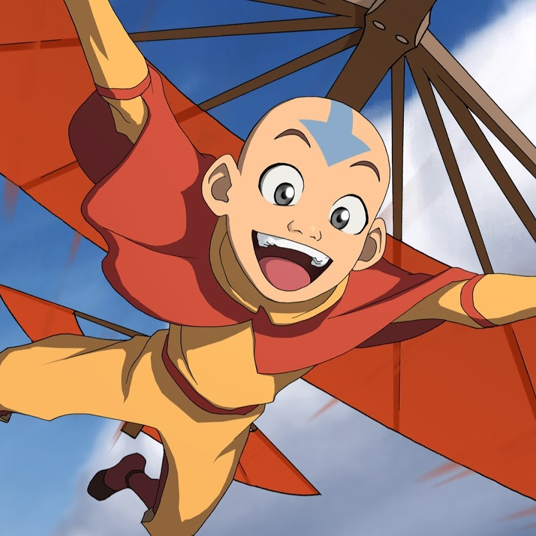
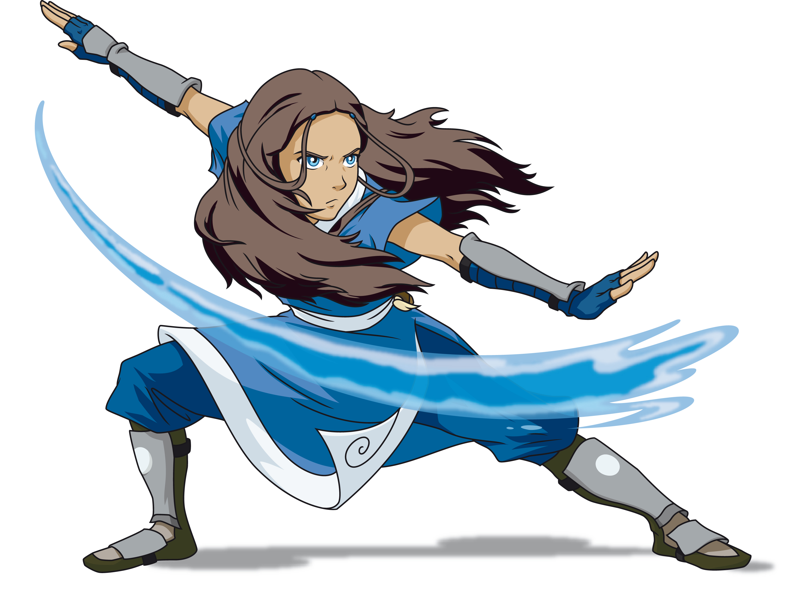
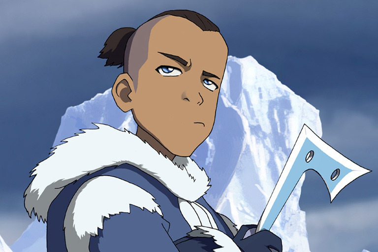
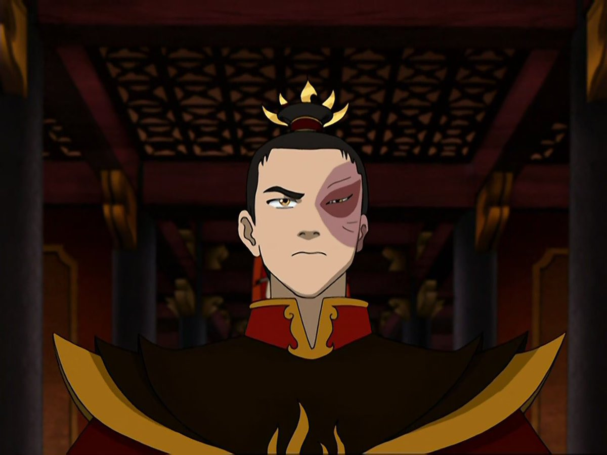
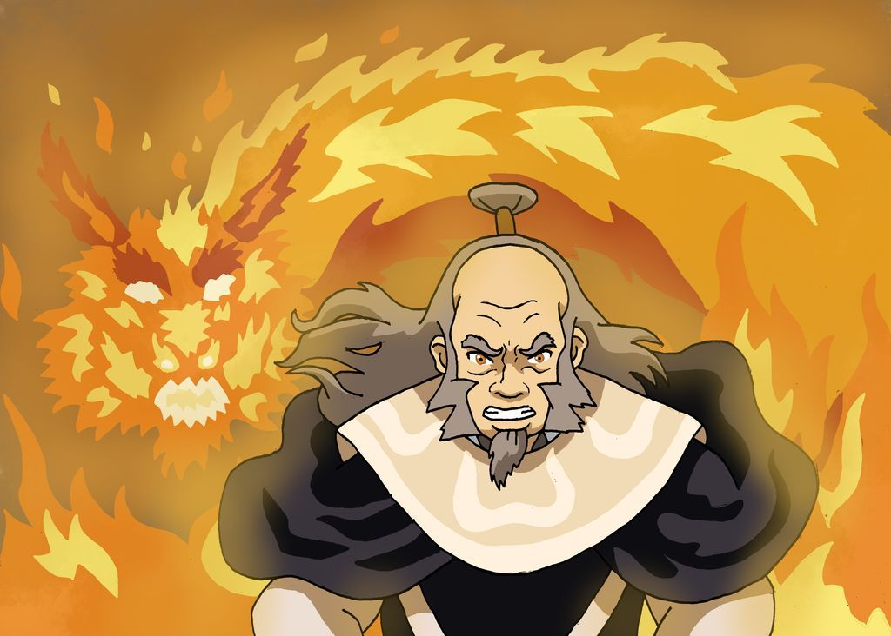
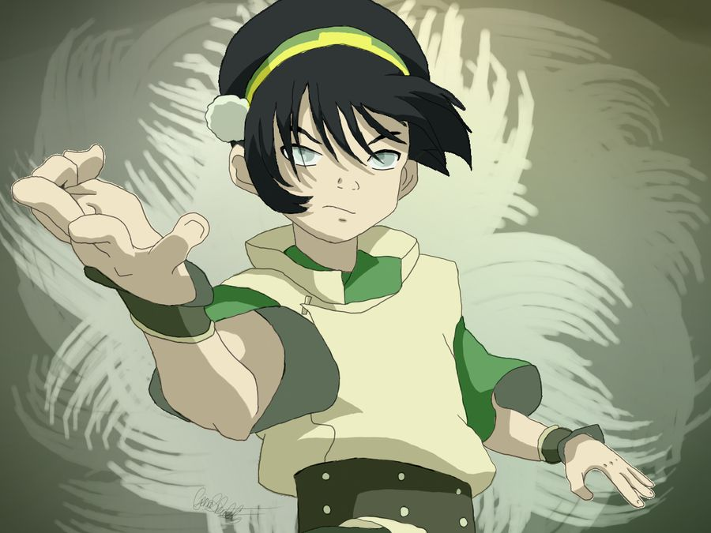
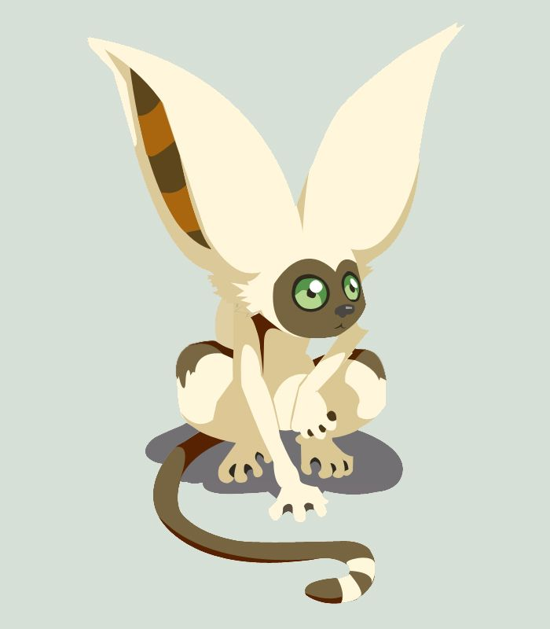

Аватар: легенда об Аанге

Аанг - единственный оставшийся в живых представитель нации Воздушных кочевников, которые были уничтожены Народом Огня в 0 году ПГ. Он является Аватаром - человеком, способным использовать все четыре вида магии: воздуха, воды, земли и огня. Именно с целью его убийства Народ Огня напал на мирных монахов. Аанг сбежал от своих наставников незадолго до этих событий, но оказался замороженным в айсберге на следующие сто лет. Всё это время в мире шла война. После пробуждения Аанг должен исполнить свою миссию: освоить все виды магии и вернуть мир.
⁂⁂⁂
Катара - дочь вождя Южного Племени Воды Хакоды и единственный маг воды на Южном полюсе. У неё есть старший брат Сокка. Их мать погибла после одной из атак Народа Огня, защищая свою дочь. Когда все взрослые мужчины Племени отправились на войну, Катара и Сокка взяли на себя управление деревней и обеспечение её жителей едой. Однажды во время рыбалки они обнаружили ледяную сферу с заключённым внутри мальчиком, который оказался Аватаром и круто изменил жизнь девушки.
⁂⁂⁂
Поначалу Сокка немного простоват и зачастую играет роль комического контраста. Он неуклюжий, «зелёный» во многих вопросах, но крайне находчивый. Он всегда остроумен, его смышлёность часто помогает решать проблемы, с которыми не могут справиться другие. Умеет импровизировать и мыслить нестандартно, однако, несмотря на свой весьма продвинутый интеллект, он порой совершал необдуманные и комичные поступки.
⁂⁂⁂
Зуко - принц народа Огня, сын Хозяина Огня Озая и его жены Урсы. Его легко узнать по шраму от ожога на левой стороне лица, который он получил от отца за отказ драться во время их Агни Кай. За такое недостойное поведение Зуко был изгнан из страны Огня, пока не найдёт Аватара, которого не видели уже 100 лет. В этом путешествии он нашёл не только новых друзей, но и самого себя.
⁂⁂⁂
Айро - бывший генерал армии страны Огня, сын Хозяина Огня Азулона старший брат Хозяина Огня Озая, мастер магии огня и наставник своего племянника, принца Зуко.Айро не похож на других солдат армии Огня и особенно на свою семью. Он - добродушный, весёлый человек. Он ценит равновесие четырёх стихий, даже делая собственные приёмы магии огня, основанные на технике покорения воды. Айро помогал Аватару Аангу и его друзьям остановить своего брата - Хозяина Огня Озая.
⁂⁂⁂
Тоф Бейфонг - единственный ребёнок в семье Лао и Поппи Бейфонг. Её родители - одни из богатейших людей в царстве Земли. Тоф родилась слепой и с самого детства была окружена постоянной заботой и вниманием. Однако чрезмерная опека претила независимому характеру девочки. Тоф нашла себя в магии земли и, благодаря ей, научилась видеть окружающий мир. Встретившись с Аангом, она решилась на отчаянный шаг и сбежала из дома, чтобы учить Аватара магии земли.
⁂⁂⁂
Момо - крылатый лемур, верный спутник Аанга и его друзей. Он - единственный крылатый лемур в сериале и, возможно, последний в своём роде. Момо умён, но либо неспособен к пониманию, либо избирательно понимает человеческую речь. Он обожает любые виды фруктов и вообще он любит поесть. Поведение Момо напоминает больше поведение кота, чем настоящего лемура.